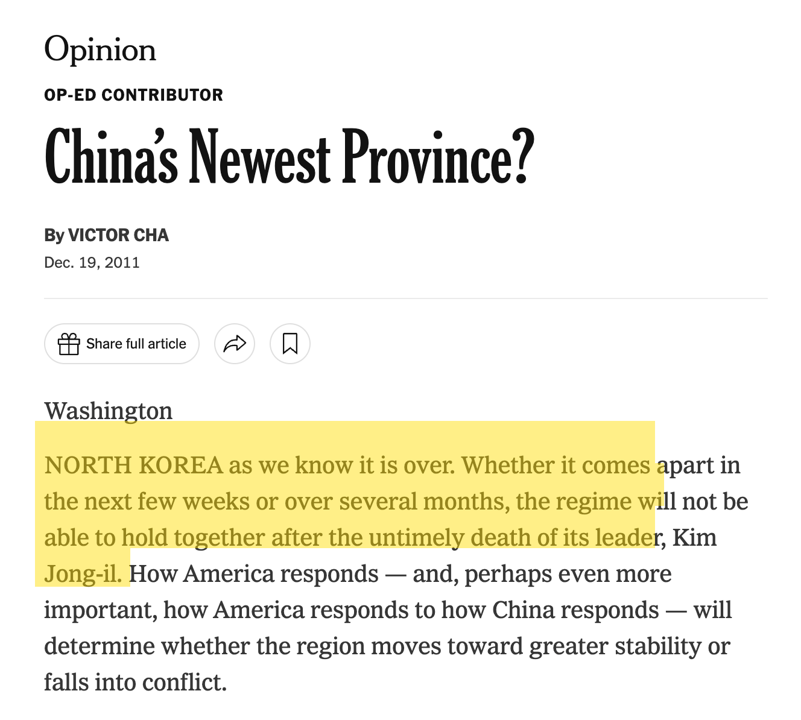
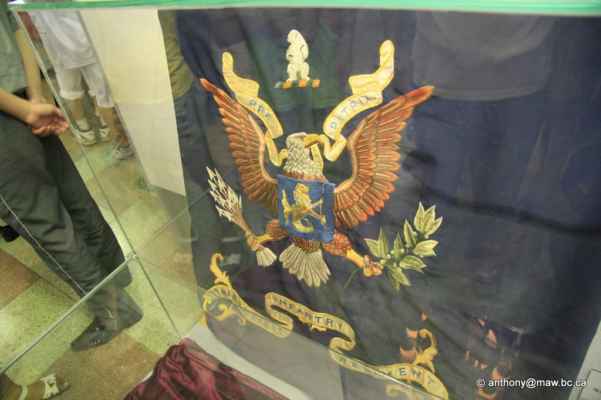

Neenah Club · March 16, 2026
What Korea Reveals About Us
Matthew Wegehaupt · 오상진
East Asian Studies · Lawrence University
The Image
January 2014. The ISS passes over East Asia. South Korea blazes. North Korea is dark.
The West sees proof.
ISS Expedition 38, January 30, 2014 · NASA · Public Domain
1894 – 1895
China and Japan fight over the peninsula. Korea does not choose this war. Korea does not benefit from it.
Georges Bigot, “Une partie de pêche” (1887)

1904 – 1905
Russia replaces China. Japan defeats a European power for the first time. Korea pays the price.
Rostro, French cartoon postcard (1904)
1950 – 1953
A civil war becomes a Cold War proxy. The division — imposed from outside — becomes permanent.
Armistice signing, Panmunjom, July 27, 1953
1950 – The Greatest Defeat
The colors of the U.S. 31st Infantry Regiment, captured by Chinese People’s Volunteer Army forces at the Battle of Chosin Reservoir. The only American regimental flag lost since the Civil War. Today it sits in a glass case in Beijing while schoolchildren walk past.
Military Museum of the People’s Revolution, Beijing · Photo: Anthony Maw
Getting North Korea Wrong
Nuclear weapons. A space program. A million-man army. The satellite image says “failed.” The evidence says otherwise.
Mirae (Future) Scientists Street, Pyongyang
Getting South Korea Wrong

The Fact That Breaks the Narrative
1960: North's GDP per capita was 2.2x the South's. For a full generation, the “communist” side outperformed the “capitalist” side. South Korea has since passed Japan.
Getting the Future Wrong
China. India. Vietnam. Japan. Russia. And a unified Korea — 80 million people, $6 trillion in minerals, the world's largest rare earth deposit, and South Korean technology. The satellite image makes you stop thinking about Korea. That is exactly what you cannot afford to do.
Hwasong-17 ICBM — the largest road-mobile intercontinental ballistic missile on Earth.
Sources & Further Reading